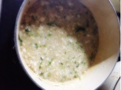
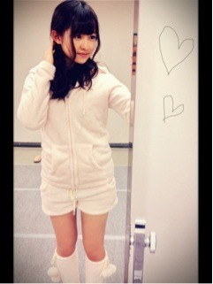

2013/0108Tue338回目*marika
学校始まったー！
また毎朝早く起きないと行けない。
がんばるっ
その後メンバー、スタッフさんと
乃木神社にお参りしました。
おみくじは小吉だった
いいのか悪いのか。
......
今日は1月7日。
七草粥を食べる日。

まりっ会のみなさん聞いて？！
...作りました。
...私が！
が、頑張ったろおおおお
伊藤家はいつも玄米を使っているので
できあがりはお粥にしては
ちょっと硬かった。ので、
お母さんはまた煮込みましたが...
美味しかった。それなりに！
はっあー！
ねねに自慢しよ←
みなさんは七草粥食べましたか？
*********
 今欲しい物は何ですか!?
今欲しい物は何ですか!? んー...特にこれというのはないけど
んー...特にこれというのはないけどハンドメイドのブローチ！
ブローチとか集めてるから
ハンドメイドっていうなら自分で
作れやって話だけどね笑
美容グッズも気になってる。
新規まりっ会の会員はまず何をすればよいですか?
まりか推しでいてくださるだけでもうとっても嬉しいです
まじめに、たまにゆるーくね！
まりっ会に入会してくれて
ありがとう。
家ではよく、こんなルームウェアとか着るの？？
...え！......え、、
着てない...！
子供扱いされたらやっぱりイラ立ちますか？
慣れてる
慣れてる。もん...
子供じゃないいいうあああ！！！
いや、でも大人っぽくきれいに
なりたいって本気で思ってるよ。うん
**********
選抜発表の記事、
コメントありがとうございました。
全部読みました。
...ごめんなさい。
放送を見た直後に
思ったことそのまま書こうとしたけど
ぐちゃぐちゃしちゃって
強がった文しか書けませんでした。
みなさんと喜び合いたい気持ち
だけではなく、
気持ちを共有することって
大切ですよね。
だって一緒に坂を登ってるんだもの！
強がってる私も
弱気な私も
受け入れてくださるみなさんが
本当にだいすきです。
本当にありがとう。
キリッ！
シャープに見える！わあい
まりか
2013/0107Mon337回目*marika
個別握手会in幕張メッセ
来てくださったみなさん
ありがとうございました♪
3部 ふわふわ巻き
4部 ふわふわ巻き＋三つ編み
森からやってきたの。
ワンピース ライチ
ネックレス 自由が丘の雑貨屋さん
カーディガン ParAvion
靴下 ライチ
靴 お母さんの
この前買ったワンピースだよー
形がかわいいんだー
金髪生駒に
「いつかその森を破滅してやる」
と言われたので
「私がいる限り森は破滅しないわ」
と答えました。
私は森の妖精♪とるんるんしてたら
周りに人がいなくなりました。
なんでえ！！！！！！！
今回は森の民じゃなくて
森の妖精だもん♪←
5部 巻きツイン

まさかのルームウェア。
メンバーにびっくりされたよー
ルームウェア LAZY DAISY
らしくない！！
でも持ってるから着るしかない！
普段こんなに脚出さないから
落ち着かんかった
親友とおそろいなのさ
やっぱり握手楽しいな。
元気いっぱいもらえる。
たくさんありがとう
森で収穫した木の実を
ネックレスにしたんだよ☆
紫の実がいちばん美味しいよ☆
まりか
2013/0107Mon336回目*marika
5thシングルの選抜メンバー発表が
ありました。
自ら確認しに行きましたが、
今回も選抜に入れませんでした。
行こうか行かないか迷ってた。
流れで行ってしまったのもあるけど
自分で結果を知りたかった。
握手会でみなさんにもらったことばに
対して、態度で発表の結果が
わからないように必死だったので
胸が苦しかったです...
応援してくださるみなさんの中では
選抜にこだわらなくてもいい
って言ってくださる方もいます。
もう5thの発表ですが、
また6、7...とこれから続いてきます。
毎度の選抜発表で、
私は悔しくて泣いてる姿を
見せたくないです。
みなさんと喜び合いたいです。
3rdで選抜の期間から
4thでアンダーの期間は
自分が変わったことがたくさんあるし
学んだこともたくさんありました。
満足してないです。
選抜にこだわらなくてもって
あきらめたくないです。
私はもっと上を目指したいです。
選抜メンバーになって
またいろいろな経験をしたいです。
強い気持ちでいたいです。
今回の結果も、しっかり受け止めて
与えられたポジションで
ちゃんと魅せられるように
自分を磨いて努力し続けます。
二期生募集も始まり
一期生として引っ張らなければ
いけません。
選抜であってもアンダーであっても
こうやって、さっきから
前向きなことしか言ってないけど、
もちろん不安もあります。
後ろ向きに考えてしまってたら、
不安で押し潰されて立てなかったら
どうかみなさん、
前へ前へ押してほしいです！
みなさんの支えがある限り
大丈夫です。
よし！
今日からも頑張る！
握手会についてはまた次書きます^^
まりか
2013/0105Sat335回目*marika
全国握手会in幕張メッセ
来てくださったみなさん
ありがとうございました♪
恒例の抽選会、自己紹介
前の全握でもフルネーム
言い忘れてしまいました...

まりっかはー？
＼どうがーん／
だけど大人だもん♪
...のみで終わってました。
はあー気をつけなきゃー><
あ、15㎝切ったけど髪型
ほめてくれたんか気づいたんか
わからんけどよかったってことで♪←
抽選会の乃木神社の絵馬
当たった方おめでとうございました。
願い事叶うといいなあ～
......
ステージがパワーアップしてたね！
広くなって大きいモニター2つも ！
！
！びっくりしました！
♪指望遠鏡
♪春のメロディー
♪渋谷ブルース
♪やさしさなら間に合ってる
♪制服のマネキン
渋谷ブルースで
まいやんとかずみが着てる
「WHITE HIGH」Tシャツの
ダメージ加工私がやったんだよー
よかったらそこも注目してねー^^
というかあのTシャツ普通に欲しい笑
......
ライブ後の握手会。
＼ゆったんまりっかレーン／
2013年初握手ということで
盛り上がったね ♪
♪
♪はじめましての方が
たくさん来てくださって
めっちゃ嬉しかったです！
ふぁみたんのみなさん
まりっ会のみなさん
ありがとうございました
めっちゃ楽しかったー
ゆったん机動かし過ぎ笑
楽しかったから喉がらがらやわ！
やばい！明日個握あるのに
個握も楽しみ
3部4部5部だよ。
3部4部はこの間買った服着る^^
5部で服装変えようかな～
なにしよ～
待ってるからね
まりか
2013/0104Fri334回目*marika
今日はレッスンでした♪
レッスンルームにぞくぞくと
メンバーが入ってくるんだけど
みんな元気過ぎ笑
みんな休みは実家に帰ったりして
えんじょいしてたんやな
*****HaPPy BirThDAy*****
みさ♡2013.1.4
みさ先輩
...だけど甘えん坊なんだよー
この前夜にみんなで
コンビニ行ったらね、
私に寄ってきて甘えてきてん^^
その時にごにょごにょっと
みさのおねえたまは
まりか～って言ってたー笑
眠そうやったー笑
すごいしっかり物のお姉さんだけど
けっこうぬけてるし！
ハレンチをフレンチって言うしっ！
(みさのブログ読んでね)
おもしろいです！
そんなみさ先輩すきです！照
リクエスト8
みさ先輩にちゅーされるまりか
おめでとうきゃは
きゃは......
髪切ったけどそんなに変わってない
って言う方が多かったね。
たしかにロングのままだ。
いや！変わったんだぜ ？！
？！
？！定規！定規！←
写真じゃわからないかあ。
メンバーからは
幼くなった、大人っぽくなった
どっちも言われました。
...どっちなんでしょね
......
明日の幕張全握。
ふぁみたんのみなさん、
よろしくお願いします♪
ライブも楽しみねー
では明日全握で会いましょう
まりか